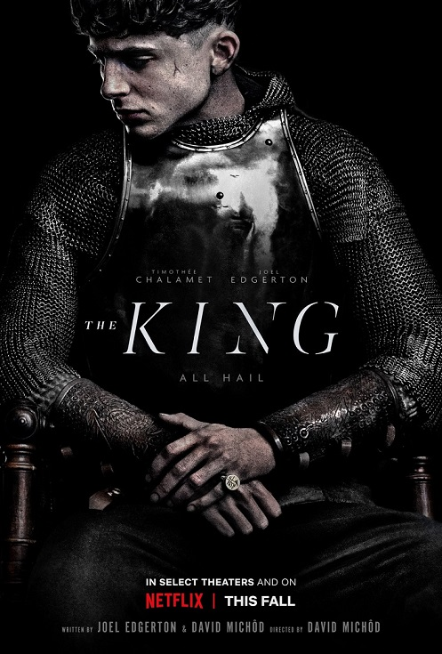

HARLEY QUINN BIRDS OF PREY Official Trailer (2020)
Margot Robbie
Birds of Prey (and the Fantabulous Emancipation of One Harley Quinn) adalah film dari DC Extended Universe yang mengisahkan tentang Harley Quinn, satu-satunya personel perempuan di Suicide Squad. Jika dalam Suicide Squad ia digambarkan sebagai pacar Joker (Jared Leto) dan selalu berada di bawah bayang-bayang sang kekasih, maka ini waktunya Harley Quinn alias Dr. Harleen Quinzel untuk berdiri di atas kaki sendiri.
Margot Robbie kembali menjadi Harley Quinn yang jahat dan suka warna-warni cerah dalam film lepasan ini. DC telah merilis trailer resmi perdana Birds of Prey, dibuka dengan sang karakter utama dan gambaran sejumlah wanita lain, yang kelak menjadi sekutu Quinn.
MOST POPULAR IN THIS WEEK
THE KING post in january 2019
The King is a 2019 historical drama film based on several plays from William Shakespeare's "Henriad". It is directed by David Michôd and written by Michôd and Joel Edgerton. The film stars Timothée Chalamet as King Henry V, with Edgerton, Sean Harris, Lily-Rose Depp, Robert Pattinson, and Ben Mendelsohn. It had its world premiere at the Venice Film Festival on 2 September 2019, and was released on 11 October 2019 in selected theatres, before being put up for digital streaming on 1 November 2019, by Netflix.
SPONSOR BY
PRODUCTIONS post in april 2019
Coachella adalah festival musik dan seni tahunan yang diselenggarakan di Empire Polo Club di Indio, California, tepatnya terletak di Inland Empire, Coachella Valley di Gurun Colorado. Festival ini disebut juga dengan Coachella Valley Music and Arts Festival atau Coachella atau Festival Coachella.
Coachella ini didirikan oleh Paul Tollett pada tahun 1999 dan kemudian diselenggarakan oleh Goldenvoice yang merupakan anak perusahaan dari AEG Live.
Acara Coachella ini memiliki banyak genre musik, termasuk rock, indie, hip hop, dan musik dansa elektronik, juga terdapat instalasi seni dan patung.
Di lapangan, terdapat beberapa panggung maraton yang diselenggarakan dengan tenda-tenda besar dan panggung utama yang menjadi rumah musik. Panggung utama seperti Coachella Stage, Outdoor Theatre, Tenda Goci, Tenda Mojave, dan Kemah Sahara, ada juga yang lebih kecil yaitu Oasis Dome digunakan pada tahun 2006 dan 2011, sedangkan Panggung Yuma baru diperkenalkan pada tahun 2013.
Festival ini berawal dari ke konser 1993 dimana Pearl Jam manggung di di Empire Polo Club sesaat setelah memboikot tempat yang dimiliki oleh Ticketmaster. Acara ini akhirnya menjadi inspirasi sebuah situs untuk hosting acara besar, yang mengarah kepada Coachella Festival.